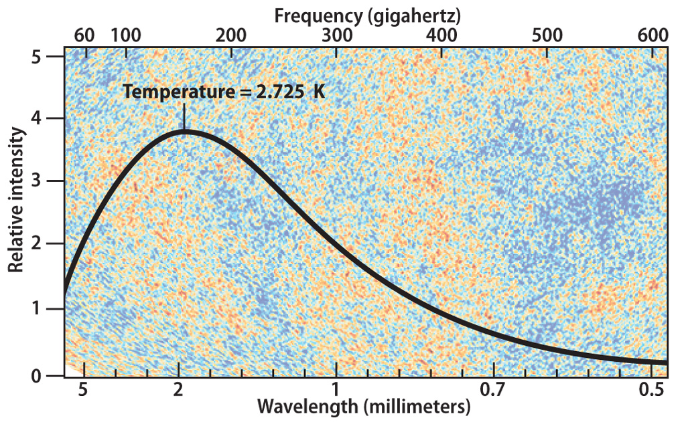

You point a dish up into space and pick up a signal. Nothing strange so far. All matter emits electromagnetic waves. Most likely, the signal is coming from a galaxy, a star, or some other cosmic object or event. But you realize that you are literally pointing at nothing. When I say nothing, I mean the vast emptiness of space—no atoms, waves, light, stars, planets… nothing. So where is this signal coming from? Why is nothing emitting… something?
You analyze the signal closely and conclude that its blackbody spectrum (a graph representing the distribution of emitted radiation across wavelengths of an object) almost perfectly matches that of a blackbody at about 2.7 Kelvin (-454.81°F), where the peak emission is in the microwave range. What in the world does this mean?

Well, that's what scientists in the mid-20th century were trying to figure out. Why is there this microwave static everywhere in the emptiness of space?
Right after the Big Bang, the universe was inconceivably hot—so hot that it didn't allow atoms to form. The whole cosmos was a soup of plasma, permeating throughout space. The light that plasma emitted couldn't travel far, since as it moved, it would bump into particles and rebound, changing its trajectory. It was like a massive pinball machine. But during that time (and even now), the universe was cooling down, and after about 400,000 years, it was finally cool enough for atoms to form. When they did, it was as if the universe suddenly became transparent, and the light could finally travel across space. That moment—when the universe became visible—was when all those photons that had built up were finally able to move freely.
But the universe is always expanding at every point in space, and that has a peculiar effect on light: expanding space stretches light, shifting it to a lower frequency. This is called cosmological redshift, since the light is shifted to lower and lower frequencies due to this expansion. The expansion has stretched the light emitted when atoms first formed so much that it's now in the microwave range, one of the lowest frequency of electromagnetic waves. When a dish is pointed up into space, that noise—the cosmic microwave background—is the redshifted light that was emitted everywhere in the universe right after atoms were able to form.
Fun fact: if that light were never redshifted, the entire universe would be orange—the original frequency of the light emitted. With that in mind, stay curious and planetary.